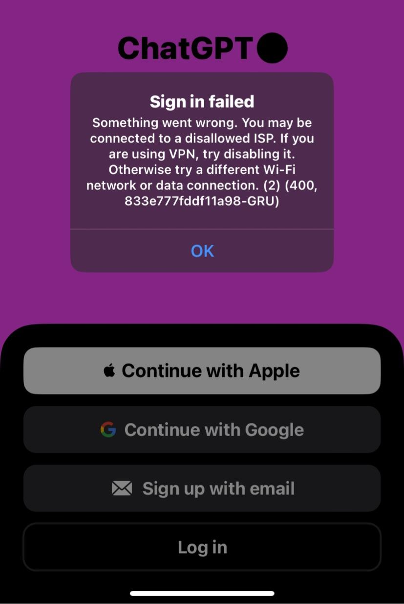

GFW, Proxy APIs, VPN Detection | Original
Table of Contents
- Can APIs in Proxy Servers Avoid GFW Bans?
- Mixing proxy and API traffic avoids GFW bans
- GFW distinguishes proxy from normal HTTP/HTTPS traffic
- GFW likely bans based on exclusive proxy traffic
- GFW uses a time window for traffic analysis
- Regularly accessing API may prevent detection
- How the Great Firewall (GFW) works.
- GFW logs requests with source and target data
- Bans IPs associated with illegal activity
- Uses rules to detect specific protocols
- Can ban based on percentage of illegal requests
- Employs AI for intelligent traffic pattern detection
- Analysis of ChatGPT iOS VPN Detection
- ChatGPT iOS now works with some VPNs
- Access depends on VPN server location
- Detection is based on specific IP addresses
- Some cloud provider IPs are banned
Can APIs in Proxy Servers Avoid GFW Bans?
I run a simple server on my Shadowsocks instance with the following code:
from flask import Flask, jsonify
from flask_cors import CORS
import subprocess
app = Flask(__name__)
CORS(app) # Enable CORS for all routes
@app.route('/bandwidth', methods=['GET'])
def get_bandwidth():
# Run the vnstat command to get the 5-minute interval traffic statistics for eth0
result = subprocess.run(['vnstat', '-i', 'eth0', '-5', '--json'], capture_output=True, text=True)
data = result.stdout
# Return the captured data as a JSON response
return jsonify(data)
if __name__ == '__main__':
app.run(host='0.0.0.0', port=5000)
And I use nginx to serve port 443 as shown below:
server {
listen 443 ssl;
server_name www.some-domain.xyz;
ssl_certificate /etc/letsencrypt/live/www.some-domain.xyz/fullchain.pem; # managed by
# ...
location / {
proxy_pass http://127.0.0.1:5000/;
# ...
}
}
This server program provides network data, and I use the server as my proxy server, allowing me to display my online status on my blog using the network data.
What’s interesting is that the server hasn’t been banned by the Great Firewall (GFW) or any other network control systems for several days now. Normally, the proxy server I set up would be banned within one or two days. The server runs a Shadowsocks program on a port like 51939, so it operates with Shadowsocks traffic mixed with regular API traffic. This mix seems to lead the GFW to believe the server is not a dedicated proxy, but rather a normal server, preventing it from banning the IP.
This observation is intriguing. It seems that the GFW uses specific logic to differentiate proxy traffic from regular traffic. While many websites like Twitter and YouTube are blocked in China, numerous foreign websites—such as those of international universities and companies—remain accessible.
This suggests that the GFW likely operates based on rules that distinguish between normal HTTP/HTTPS traffic and proxy-related traffic. Servers that handle both types of traffic seem to avoid bans, whereas servers handling only proxy traffic are more likely to be blocked.
One question is what time range the GFW uses to accumulate data for banning—whether it’s one day or one hour. During this time range, it detects whether the traffic is exclusively from a proxy. If it is, the server’s IP gets banned.
I often visit my blog to review what I’ve written, but in the coming weeks, my focus will shift to other tasks instead of writing blog posts. This will reduce my access to the bandwidth API through port 443. If I find that I get banned again, I should write a program to regularly access this API to trick the GFW.
Here’s the refined version of your text with improved structure and clarity:
How the Great Firewall (GFW) works.
Step 1: Logging Requests
import time
# Database to store request data
request_log = []
# Function to log requests
def log_request(source_ip, target_ip, target_port, body):
request_log.append({
'source_ip': source_ip,
'target_ip': target_ip,
'target_port': target_port,
'body': body,
'timestamp': time.time()
})
The log_request function records incoming requests with essential information like the source IP, target IP, target port, request body, and timestamp.
Step 2: Checking and Banning IPs
# Function to check requests and ban IPs
def check_and_ban_ips():
banned_ips = set()
# Iterate over all logged requests
for request in request_log:
if is_illegal(request):
banned_ips.add(request['target_ip'])
else:
banned_ips.discard(request['target_ip'])
# Apply bans to all identified IPs
ban_ips(banned_ips)
The check_and_ban_ips function iterates through all logged requests, identifying and banning IPs that are associated with illegal activity.
Step 3: Defining What Makes a Request Illegal
# Function to simulate checking if a request is illegal
def is_illegal(request):
# Placeholder for actual illegal request check logic
# For example, checking request body or target
return "illegal" in request['body']
Here, is_illegal checks whether the request body contains the word “illegal.” This can be expanded to more sophisticated logic depending on what constitutes illegal activity.
Step 4: Banning Identified IPs
# Function to ban a list of IPs
def ban_ips(ip_set):
for ip in ip_set:
print(f"Banning IP: {ip}")
Once illegal IPs are identified, the ban_ips function bans them by printing their IP addresses (or, in a real system, it could block them).
Step 5: Alternative Method for Checking and Banning IPs Based on 80% Illegal Requests
# Function to check requests and ban IPs based on 80% illegal requests
def check_and_ban_ips():
banned_ips = set()
illegal_count = 0
total_requests = 0
# Iterate over all logged requests
for request in request_log:
total_requests += 1
if is_illegal(request):
illegal_count += 1
# If 80% or more of the requests are illegal, ban those IPs
if total_requests > 0 and (illegal_count / total_requests) >= 0.8:
for request in request_log:
if is_illegal(request):
banned_ips.add(request['target_ip'])
# Apply bans to all identified IPs
ban_ips(banned_ips)
This alternative method evaluates whether an IP should be banned based on the percentage of illegal requests. If 80% or more of the requests from an IP are illegal, it is banned.
Step 6: Enhanced Illegal Request Check (e.g., Shadowsocks and Trojan Protocol Detection)
def is_illegal(request):
# Check if the request uses the Shadowsocks protocol (body contains binary-like data)
if request['target_port'] == 443:
if is_trojan(request):
return True
elif is_shadowsocks(request):
return True
return False
The is_illegal function now also checks for specific protocols like Shadowsocks and Trojan:
- Shadowsocks: We might check for encrypted or binary-like data in the request body.
- Trojan: If the request comes over port 443 (HTTPS) and matches specific patterns (e.g., Trojan traffic characteristics), it is flagged as illegal.
Step 7: Legal Requests Example
For instance, requests like GET https://some-domain.xyz/bandwidth are surely legal and won’t trigger the banning mechanism.
Step 8: Proxy Server Traffic Characteristics
Proxy servers have very different traffic characteristics compared to regular web or API servers. The GFW needs to distinguish between normal web server traffic and proxy server traffic, which can look completely different.
Step 9: Machine Learning and AI Models for Smart Detection
Given the wide range of requests and responses that pass through the internet, the GFW could employ AI and machine learning models to analyze traffic patterns and intelligently detect illegal behavior. By training the system on a variety of traffic types and using advanced techniques, it could more effectively ban or filter traffic based on observed patterns.
Update
Despite my efforts, my proxy server continues to be banned. To mitigate this, I’ve implemented a workaround using Digital Ocean’s reversed IP feature, which allows me to quickly assign a new IP address whenever a ban occurs.
Analysis of ChatGPT iOS VPN Detection
2024.12.26
Today, I discovered that the ChatGPT iOS app now allows logging in with a VPN in China. Previously, it displayed a blocking prompt, like the one shown below.
However, as of today, it works fine with a VPN.
I remember that when the ChatGPT iOS app was first released, using it with a VPN was not an issue. Later, VPN detection became more stringent, making it difficult to log in. Thankfully, it seems that this restriction has been eased recently.
Upon further testing, I found that when using a DigitalOcean Singapore region VPN, I couldn’t access the app. However, when using VPNs from Taiwan or the UK (provided by https://zhs.cloud), it worked perfectly.
It seems that ChatGPT iOS VPN detection is based on specific IP addresses. Some cloud providers or certain IP addresses are banned, which may explain the inconsistent behavior depending on the VPN server location.
